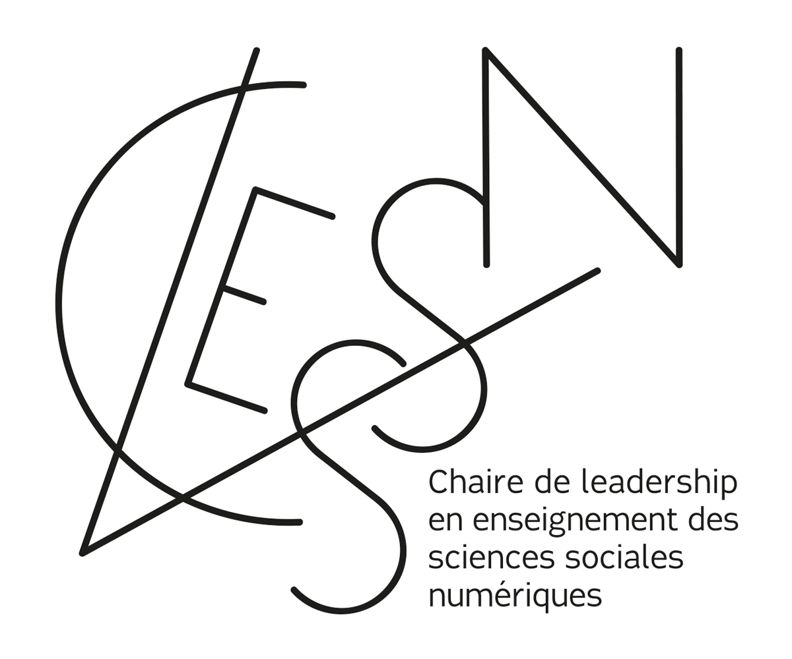

ggplot2, analyse textuelle et IA
2026-03-20
9h à 12h — Formation théorique
13h à 15h — Atelier pratique (présentiel seulement)
Rows: 1,704
Columns: 6
$ country <fct> "Afghanistan", "Afghanistan", …
$ continent <fct> Asia, Asia, Asia, …
$ year <int> 1952, 1957, 1962, …
$ lifeExp <dbl> 28.801, 30.332, 31.997, …
$ pop <int> 8425333, 9240934, 10267083, …
$ gdpPercap <dbl> 779.4453, 820.8530, …|> ou %>%Le pipe enchaîne des opérations. Lisez-le comme « puis » ou « ensuite ».
Raccourci clavier : Ctrl + Shift + M (Windows) ou Cmd + Shift + M (Mac)
| Verbe | Action |
|---|---|
filter() |
Garder des lignes selon une condition |
select() |
Garder des colonnes |
mutate() |
Créer ou modifier des colonnes |
arrange() |
Trier les lignes |
rename() |
Renommer des colonnes |
group_by() + summarise() |
Grouper et résumer |
ggplot2 est basé sur une grammaire des graphiques : on assemble des couches.
Les éléments de base :
ggplot() — initialise le graphiqueaes() — mappe les variables aux propriétés visuellesgeom_*() — choisit le type de figure+ — ajoute des couches (pas un pipe!)gapminder |>
filter(year == 2007) |>
ggplot(aes(x = gdpPercap,
y = lifeExp,
color = continent, # couleur par continent
size = pop)) + # taille par population
geom_point(alpha = 0.7) + # alpha = transparence
scale_x_log10() + # axe X en échelle log
labs(
title = "PIB per capita et espérance de vie (2007)",
x = "PIB per capita (échelle log)",
y = "Espérance de vie (années)",
color = "Continent",
size = "Population"
) +
theme_minimal()gapminder |>
filter(year == 2007) |>
group_by(continent) |>
summarise(esperance_moy = mean(lifeExp)) |>
ggplot(aes(x = reorder(continent, esperance_moy),
y = esperance_moy,
fill = continent)) +
geom_col(show.legend = FALSE) +
coord_flip() + # barres horizontales
labs(
title = "Espérance de vie moyenne par continent (2007)",
x = "Continent",
y = "Espérance de vie (années)"
) +
theme_minimal()mon_graphique <- gapminder |>
filter(year == 2007) |>
ggplot(aes(x = gdpPercap, y = lifeExp, color = continent)) +
geom_point(alpha = 0.7) +
scale_x_log10() +
theme_minimal() +
theme(
plot.title = element_text(size = 16, face = "bold"),
legend.position = "bottom"
) +
labs(title = "Mon graphique")
# Sauvegarder
ggsave("graphique.png", plot = mon_graphique, width = 10, height = 7, dpi = 300)L’IA peut écrire du code R.
Mais elle peut aussi se tromper.
Votre travail : comprendre et valider.
« Pour utiliser l’IA avec R, il faut comprendre R. »
La bonne nouvelle : avec les bases solides que vous avez, vous pouvez lire, comprendre et corriger du code généré par IA.
1. Formuler une demande précise
Contexte : j'ai un data frame R avec
les colonnes "pays", "annee", "pib",
"esperance_vie" et "continent".
Tâche : avec tidyverse, crée un nuage
de points montrant la relation entre
pib (axe x, échelle log) et
esperance_vie (axe y), coloré par
continent, pour l'année 2007 seulement.2. Lire le code avant de l’exécuter
Posez-vous ces questions :
install.packages()?3. Exécuter ligne par ligne
Pas tout d’un coup! Ligne par ligne pour repérer les erreurs.
4. Corriger et adapter
| Problème | Exemple |
|---|---|
| Nom de fonction inventé | dplyr::filter_where() |
| Version obsolète | gather() au lieu de pivot_longer() |
| Nom de colonne incorrect | data$Pays au lieu de data$pays |
| Package non installé | Oublie de mentionner install.packages() |
| Logique incorrecte | filter(year = 2007) au lieu de == |
Votre meilleur outil de validation : lire l’aide d’une fonction avec ?filter ou help(filter)
Prompt que je vais soumettre à Claude :
En R avec tidyverse et le package gapminder, écris un code qui :
1. Filtre les données pour l'année 2007
2. Calcule le PIB total par continent (sum de pop * gdpPercap)
3. Affiche un graphique en barres horizontal, trié du plus grand
au plus petit, avec des couleurs différentes par continent.
Ajoute des commentaires expliquant chaque étape.[Démonstration live — validation du code généré ensemble]
Les sciences sociales sont riches en données textuelles :
Le problème : des centaines ou milliers de textes, impossible à analyser manuellement.
La solution : l’analyse textuelle automatisée avec R.
| Approche | Outils | Usage |
|---|---|---|
| Manuelle | NVivo, Atlas.ti | Analyse qualitative fine, petits corpus |
| Automatisée | R (stringr, tidytext) | Grandes quantités de texte, patterns |
Aujourd’hui on fait de l’automatisé — mais les deux se complètent!
library(tidyverse)
# Exemple : réponses à une question ouverte de sondage sur les
# priorités politiques (traduit en anglais pour l'analyse de sentiment)
reponses <- tibble(
id = 1:8,
auteur = c("Répondant A", "Répondant B", "Répondant C", "Répondant D",
"Répondant E", "Répondant F", "Répondant G", "Répondant H"),
texte = c(
"The government must invest more in clean energy and protect the environment",
"The cost of living crisis is terrible, prices are too high for working families",
"Our healthcare system needs urgent reform and more funding immediately",
"I appreciate the government's efforts on climate change and housing affordability",
"Education should be free and accessible to all young people in this country",
"The economy is struggling and the government has failed to address inflation",
"We need stronger social programs and better support for vulnerable communities",
"This government's terrible policies have destroyed our economic opportunities"
)
)stringr fait partie de tidyverse — pas besoin d’installation supplémentaire.
# Les fonctions principales
texte <- "Le Parti libéral, le Parti conservateur et le Bloc québécois"
# Convertir en minuscules
str_to_lower(texte)
# Détecter un patron (retourne TRUE/FALSE)
str_detect(texte, "libéral")
# Compter les occurrences
str_count(texte, "Parti")
# Remplacer
str_replace_all(texte, "Parti", "parti")
# Extraire selon un patron
str_extract_all(texte, "Parti \\w+")textes_politiques <- tibble(
titre = c(
"Le Parti libéral annonce un budget déficitaire",
"Le Bloc québécois défend l'autonomie du Québec",
"Le NPD propose de hausser le salaire minimum",
"Le Parti conservateur critique les dépenses du gouvernement",
"Le Parti libéral investit dans le logement abordable"
)
)
# Compter les mentions de "Parti libéral"
textes_politiques |>
mutate(
mention_liberal = str_detect(titre, "libéral|Libéral"),
nb_mots = str_count(titre, "\\w+"),
titre_min = str_to_lower(titre)
)Tokeniser = découper un texte en unités (mots, phrases, n-grammes).
# A tibble: 80 × 3
id auteur mot
1 1 Répondant A the
2 1 Répondant A government
3 1 Répondant A must
...Les mots vides (stop words) sont fréquents mais sans signification : the, a, is, in…
Pour le français : stopwords::stopwords("fr") ou le package stopwords
mots_propres |>
count(mot, sort = TRUE) |>
slice_head(n = 15) |>
ggplot(aes(x = reorder(mot, n), y = n)) +
geom_col(fill = "#003875") +
coord_flip() +
labs(
title = "15 mots les plus fréquents dans les réponses",
x = "Mot",
y = "Fréquence"
) +
theme_minimal() +
theme(plot.title = element_text(face = "bold"))L’analyse de sentiment mesure le ton d’un texte (positif, négatif, neutre).
Principe : associer chaque mot à un score de sentiment à partir d’un lexique.
sentiment_par_auteur |>
ggplot(aes(x = reorder(auteur, score_net),
y = score_net,
fill = score_net > 0)) +
geom_col(show.legend = FALSE) +
scale_fill_manual(values = c("firebrick", "#2ca25f")) +
coord_flip() +
geom_hline(yintercept = 0, linetype = "dashed") +
labs(
title = "Ton des réponses par répondant",
subtitle = "Score net = mots positifs − mots négatifs",
x = "Répondant",
y = "Score de sentiment net"
) +
theme_minimal()# Fréquence TF-IDF (mots distinctifs par groupe)
mots_propres |>
count(auteur, mot) |>
bind_tf_idf(mot, auteur, n) |>
arrange(desc(tf_idf))
# Bigrammes (paires de mots consécutifs)
reponses |>
unnest_tokens(bigram, texte, token = "ngrams", n = 2) |>
count(bigram, sort = TRUE)
# Topic modeling (LDA) — pour corpus plus grands
# install.packages("topicmodels")
# library(topicmodels)Ressource incontournable : Text Mining with R (Julia Silge & David Robinson) — gratuit en ligne!
Apprendre R en faisant :
Aide rapide :
IA + R :
Vous y trouverez :
exercices.R)Présentiel seulement
exercices.R depuis GitHubVous avez vos propres données?
Profitez-en pour les explorer avec les outils d’aujourd’hui. Je vous aide à adapter le code à votre contexte.
Les exercices couvrent :
Des questions?
Adrien Cloutier
adrien.cloutier.1@ulaval.ca
adriencloutier.com

FSS — Université Laval — 20 mars 2026
Comment bien prompter pour R
Donnez le contexte :
Soyez précis sur la tâche :
Itérez :